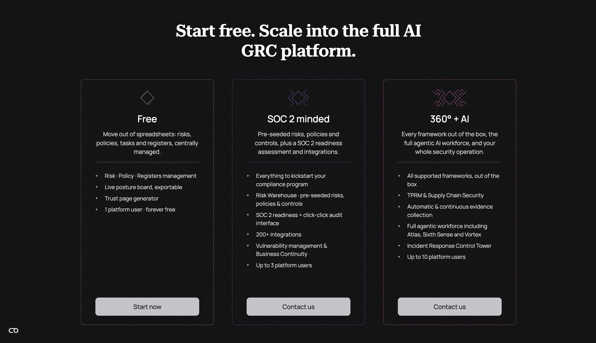

NEIGHPalm
NEIGHPalm is an AI-powered security and compliance platform. I designed and developed its marketing website: a dark, single-page experience that walks visitors through the product’s three layers, its family of AI agents, and its plans.
Website design & development, 2025. neighpalm.com
Visual Language
The Pattern
The whole site sits on a generative lattice of diamonds and dashes, a nod to circuit traces and to the palm in the name. On the hero it reacts to the cursor: fragments light up and settle around the pointer, so the background feels alive without competing with the headline.
One Pattern, Many Colours
Each section of the page is marked by the same pattern in a different colour and density, so scrolling reads as moving between rooms rather than between unrelated blocks.
Structure
Three Layers
The product is explained as three layers: a Security Brain, Automations & Integrations, and the AI workforce on top. Each layer gets a full fold with the copy pinned on one side while the illustration scrolls past on the other.
The Agents
Layer three introduces six named agents, each with its own glyph drawn from the site pattern and its own colour. The glyphs animate in as the fold enters the viewport.
Plans

Three plans, each headed by a glyph that grows in complexity with the tier, from a single diamond to the full lattice.
Mobile
On phones the side-by-side folds stack, the pattern thins out so text stays legible, and the agent glyphs become the main illustration for each section.